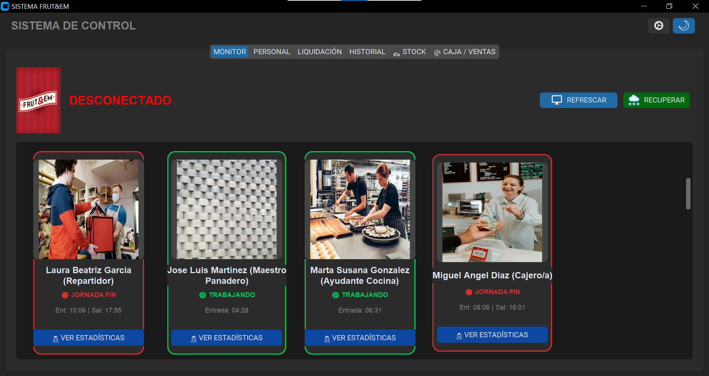
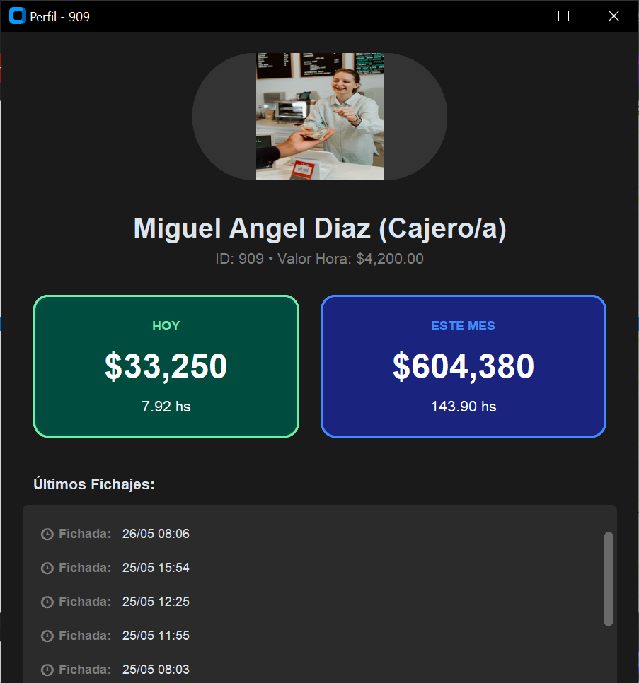
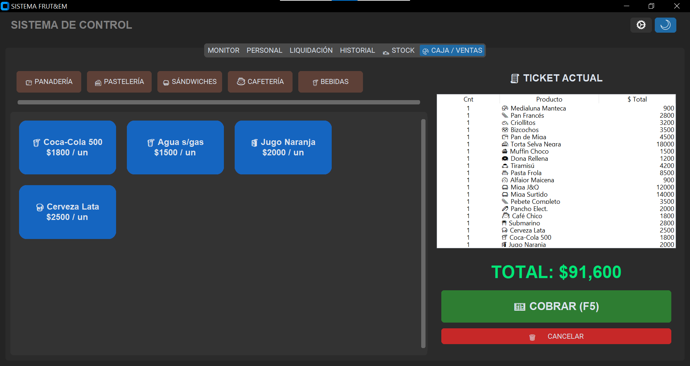
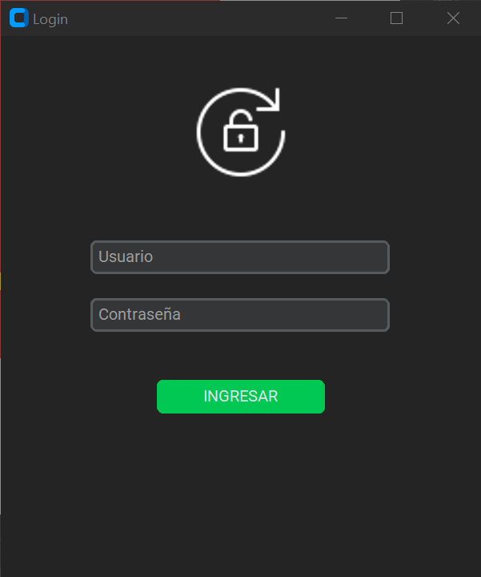
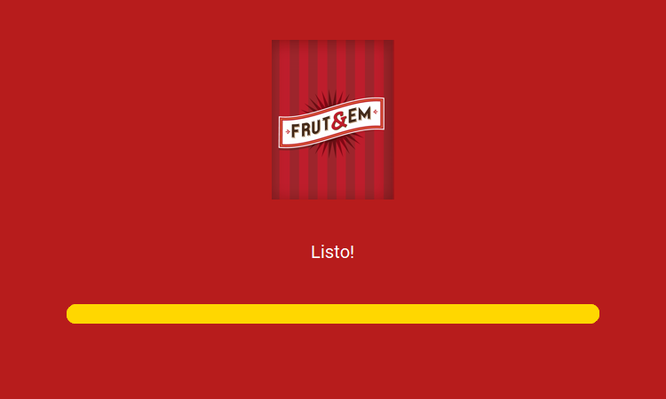

Problema
El control de horarios y pagos se volvia lento y propenso a errores cuando dependia de revisiones manuales, registros aislados o planillas editadas a mano.
Caso software a medida
El trabajo resolvio una operacion completa: registrar entradas y salidas del personal, calcular horas, liquidar sueldos, administrar stock y vender desde una caja integrada.
SDK
Reloj biometrico
MySQL
Base operativa
3x
Formatos export

El control de horarios y pagos se volvia lento y propenso a errores cuando dependia de revisiones manuales, registros aislados o planillas editadas a mano.
Una aplicacion de escritorio en Python con interfaz oscura, conexion a reloj Hikvision, gestion de empleados, historial editable, caja de ventas y motor de calculo por rango.
Un flujo mas ordenado para administracion: fichadas centralizadas, calculo de horas, liquidacion de sueldos y reportes listos para compartir o archivar.
Arquitectura
El valor principal esta en la combinacion de hardware, base de datos y reportes. La aplicacion valida fichadas duplicadas, permite correcciones manuales y separa claramente empleados, historial y liquidaciones.
Alta, edicion y baja de empleados con ID de reloj, valor por hora y foto asociada.
Lectura de eventos del reloj, deduplicacion por tiempo y limpieza de registros inconsistentes.
Calculo de horas trabajadas por empleado, entradas, salidas, alertas y total a pagar.
Salida a Excel con formato, PDF administrativo y TXT detallado para auditoria rapida.
Producto real
La presentacion del caso usa capturas reales del sistema: perfiles de empleados, monitor operativo, caja de ventas, login y carga inicial. Eso ayuda a mostrar el alcance completo sin depender de imagenes genericas.




Stack aplicado
El sistema combina interfaz de escritorio, base de datos relacional, integracion con SDK externo y generacion de documentos. Es una buena muestra de software interno: menos marketing, mas proceso resuelto.